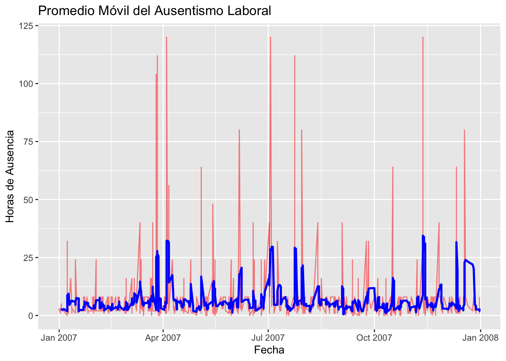
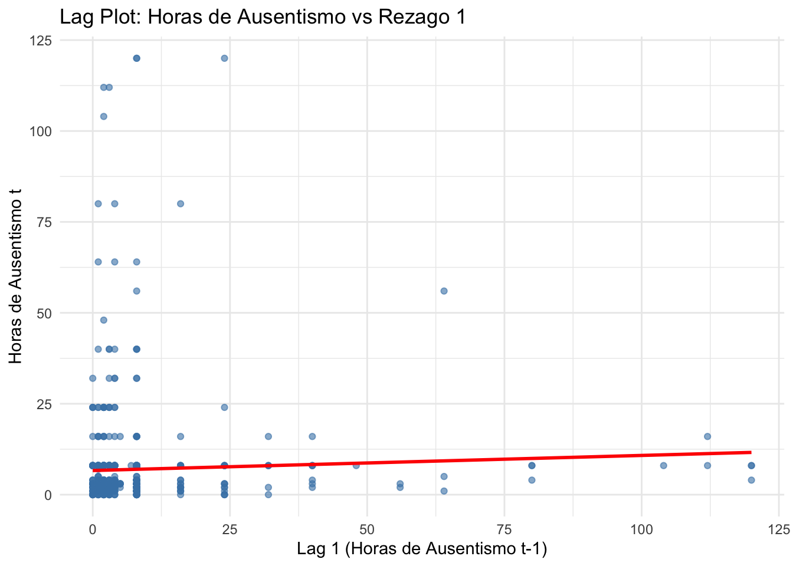
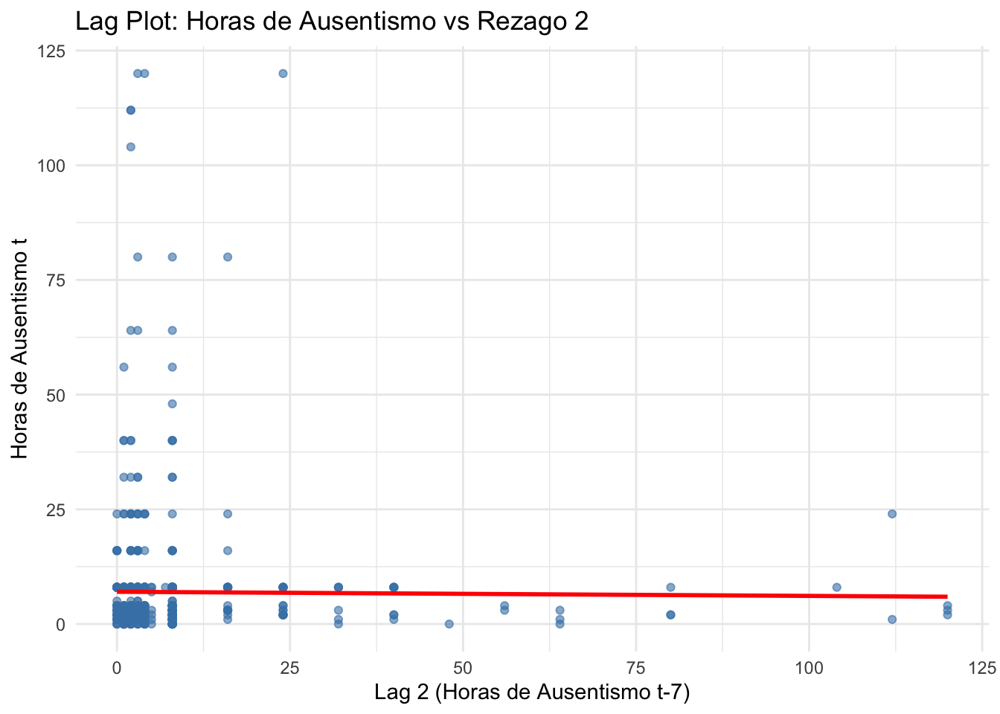
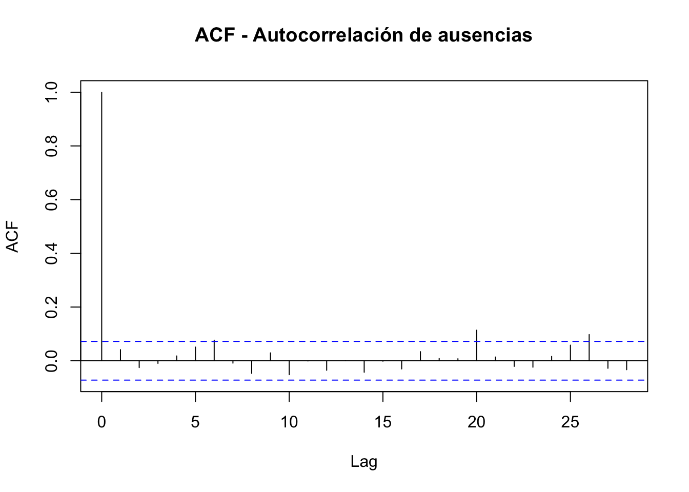
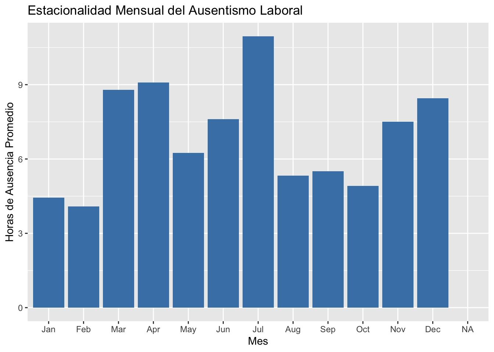
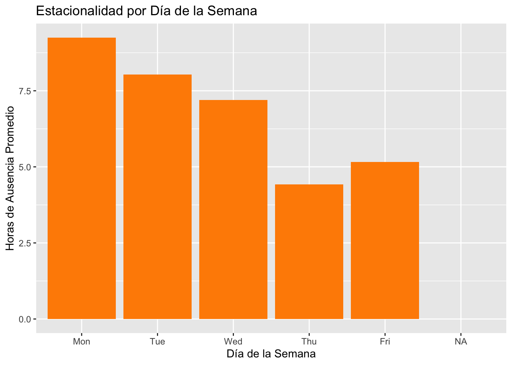
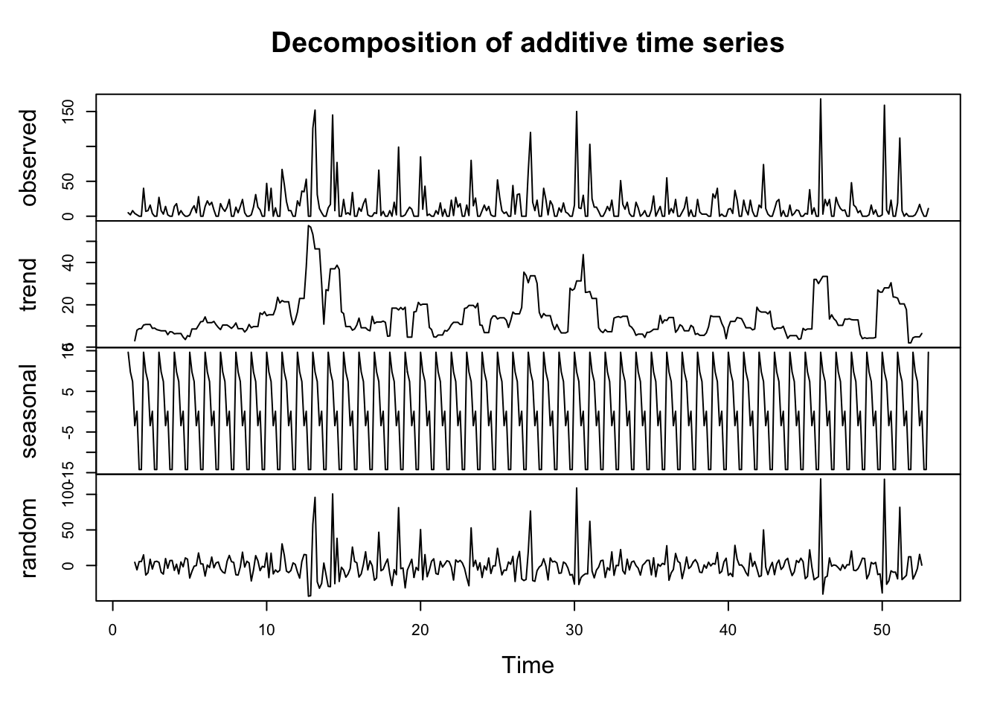
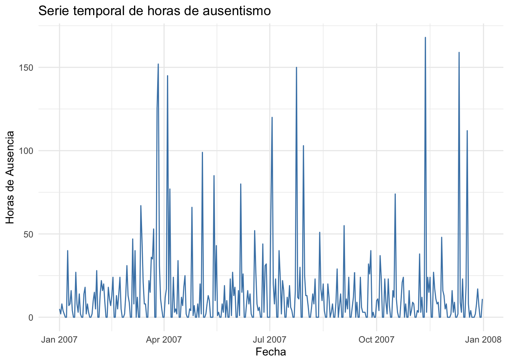

Capítulo 2 Análisis de los datos
En el presente análisis se examina el comportamiento del ausentismo laboral a partir del conjunto de datos “Absenteeism at Work” disponible en el repositorio de la UCI Machine Learning. Para identificar patrones temporales y tendencias generales, se implementan técnicas de suavizamiento como la aproximación mediante promedios móviles. Además, se exploran los rezagos (lags) para evaluar la influencia de valores pasados en la dinámica actual del ausentismo, buscando detectar posibles relaciones de dependencia temporal. Finalmente, se realiza un análisis de estacionalidad para determinar si existen variaciones sistemáticas asociadas a ciclos recurrentes, como días de la semana, meses o estaciones del año, que afecten la frecuencia del ausentismo. Estas aproximaciones permiten construir una base sólida para entender mejor el fenómeno y orientar futuros modelos predictivos o estrategias de intervención en el contexto laboral.
A continuación se procede a cargar los datos de ausentismo laboral desde un archivo local disponibles en: https://archive.ics.uci.edu/dataset/445/absenteeism+at+work. Se imprime el encabezado para ver el contenido del dataset.
# Cargar datos desde un archivo CSV
datos <- read.csv("/Users/ricardoortiz/Desktop/Maestria_CD/Series_Tiempo/bookdown-TS/Absenteeism_at_work.csv", sep = ";")
# Mostrar primeras filas con formato profesional
knitr::kable(
head(datos),
format = "html",
caption = "Tabla 1: Vista preliminar del ausentismo laboral",
align = c(rep("l", 2), rep("c", ncol(datos)-2)), # Primeras 2 columnas a la izquierda
col.names = gsub("_", " ", colnames(datos)) # Reemplazar _ por espacios
) %>%
kable_styling(
bootstrap_options = c("striped", "hover"),
full_width = FALSE,
font_size = 13,
position = "center"
) %>%
row_spec(0, bold = TRUE, color = "white", background = "#2c3e50") %>%
column_spec(1, width = "8em") %>% # Ancho fijo para primera columna
column_spec(2, width = "6em") %>%
footnote(
general = "Datos de absentismo laboral en una empresa",
general_title = "Fuente:",
footnote_as_chunk = TRUE
)| ID | Reason.for.absence | Month.of.absence | Day.of.the.week | Seasons | Transportation.expense | Distance.from.Residence.to.Work | Service.time | Age | Work.load.Average.day | Hit.target | Disciplinary.failure | Education | Son | Social.drinker | Social.smoker | Pet | Weight | Height | Body.mass.index | Absenteeism.time.in.hours |
|---|---|---|---|---|---|---|---|---|---|---|---|---|---|---|---|---|---|---|---|---|
| 11 | 26 | 7 | 3 | 1 | 289 | 36 | 13 | 33 | 239.554 | 97 | 0 | 1 | 2 | 1 | 0 | 1 | 90 | 172 | 30 | 4 |
| 36 | 0 | 7 | 3 | 1 | 118 | 13 | 18 | 50 | 239.554 | 97 | 1 | 1 | 1 | 1 | 0 | 0 | 98 | 178 | 31 | 0 |
| 3 | 23 | 7 | 4 | 1 | 179 | 51 | 18 | 38 | 239.554 | 97 | 0 | 1 | 0 | 1 | 0 | 0 | 89 | 170 | 31 | 2 |
| 7 | 7 | 7 | 5 | 1 | 279 | 5 | 14 | 39 | 239.554 | 97 | 0 | 1 | 2 | 1 | 1 | 0 | 68 | 168 | 24 | 4 |
| 11 | 23 | 7 | 5 | 1 | 289 | 36 | 13 | 33 | 239.554 | 97 | 0 | 1 | 2 | 1 | 0 | 1 | 90 | 172 | 30 | 2 |
| 3 | 23 | 7 | 6 | 1 | 179 | 51 | 18 | 38 | 239.554 | 97 | 0 | 1 | 0 | 1 | 0 | 0 | 89 | 170 | 31 | 2 |
| Fuente: Datos de absentismo laboral en una empresa |
Al revisar los datos se identifica que la variable de interés que puede ser apropiada para hacer el análisis es el tiempo de ausentismo en horas, ( Absenteeism.time.in.hours ). La cuál es la variable objetivo del dataset según la descripción del mismo.
El dataset no incluye una fecha específica por lo que es necesario construirla a partir de variables tales como Month.of.absence y Day.of.the.weeek. Para ello, usamos el siguiente código.
# Crear fechas de 2007 con día de la semana donde 1 = Domingo, ..., 7 = Sábado
fechas_2007 <- seq.Date(from = as.Date("2007-01-01"), to = as.Date("2007-12-31"), by = "day")
dias_semana_2007 <- wday(fechas_2007, week_start = 7) # 1 = Domingo, 2 = Lunes, ..., 7 = Sábado
dias_semana_2007_df <- data.frame(Fecha = fechas_2007, Dia_de_la_semana = dias_semana_2007)
# Crear la columna 'Fecha' en el dataframe 'datos'
set.seed(123)
datos <- datos %>%
filter(!is.na(Month.of.absence) & !is.na(Day.of.the.week)) %>%
mutate(
Fecha = as.Date(sapply(1:nrow(.), function(i) {
mes <- Month.of.absence[i]
dia_semana <- Day.of.the.week[i]
posibles_fechas <- dias_semana_2007_df %>%
filter(month(Fecha) == mes & Dia_de_la_semana == dia_semana)
if (nrow(posibles_fechas) > 0) {
sample(posibles_fechas$Fecha, 1)
} else {
NA
}
}), origin = "1970-01-01")
)
# Verificar
head(datos$Fecha)## [1] "2007-07-17" "2007-07-17" "2007-07-11" "2007-07-12" "2007-07-12"
## [6] "2007-07-20"2.1 Media Movil
El ausentismo laboral día a día puede tener mucha variabilidad, pues algunos días hay cero horas y otros días hay ausencias largas. La media móvil reduce las fluctuaciones diarias y muestra una tendencia más limpia. En este caso se generó un gráfico que muestra en rojo la variabilidad real y en azul la media móvil.

Se aplicó un promedio móvil de 5 días al ausentismo laboral registrado. A partir del gráfico se puede concluir que en el primer trimestre el ausentismo suele ser bajo a comparación de los siguientes trimestres, sobre todo el tercer que presenta un pico promedio de más de 50 horas
2.2 Rezagos
El análisis de rezagos busca identificar si el ausentismo de hoy está relacionado con el ausentismo de días anteriores. Por ejemplo, interesa saber si un empleado que falta hoy tiene más probabilidad de faltar también mañana, o si, después de un día de alta ausencia, el ausentismo tiende a aumentar o disminuir en los días siguientes. Este tipo de relación temporal es fundamental para la construcción de modelos predictivos, como los modelos ARIMA o las regresiones que incorporan dependencias en el tiempo.
## [1] 0.04146078## [1] -0.008995374## [1] -0.001743892El análisis de los rezagos a 1, 7 y 15 días muestra correlaciones muy bajas (0.041, - 0.008 y -0.0017 respectivamente), indicando la ausencia de dependencia temporal significativa en los datos de ausentismo laboral. Estos resultados sugieren que el ausentismo no sigue un patrón repetitivo ni está influenciado por ausencias anteriores, comportándose de manera aleatoria a lo largo del tiempo. Esto claramente está también influenciado por la forma como se construyó la serie de tiempo de forma aleatoria a partir de la información disponible.
Este tipo de gráfico muestra la relación entre el valor en t y su valor en t-1, esto es:
## `geom_smooth()` using formula = 'y ~ x'
## `geom_smooth()` using formula = 'y ~ x'
## `geom_smooth()` using formula = 'y ~ x'En estos gráficos podemos observar que los puntos son caóticos o dispersos en todos los rezagos, no hay dependencia fuerte en el rezago, es decir no hay mucha relación entre el valor actual y el pasado.
vamos a graficar la Autocorrelation Function (ACF), esto mide cuánta correlación existe entre la serie y sus propios rezagos.
acf(datos$Absenteeism.time.in.hours, na.action = na.pass, main = "ACF - Autocorrelación de ausencias")
A partir del resultado del gráfico se interprta que no hay correlaciones significativas en los rezagos.
2.3 Análísis de estacionalidad
La estacionalidad es un patrón repetitivo o cíclico que ocurre a intervalos regulares en una serie de tiempo, como cada semana, cada mes o cada año.
En este caso, queremos ver si hay momentos del año (o del mes) en los que el ausentismo tiende a aumentar o disminuir sistemáticamente.Como en el conjunto de datos tenemos el mes (simulado con fechas) y las horas de ausentismo, podemos ver si ciertos meses muestran mayores ausencias que otros.


El análisis de la estacionalidad mostró que el ausentismo laboral no presenta variaciones cíclicas fuertes a lo largo del año. Aunque se observan ligeras variaciones en algunos meses, no se identificaron patrones claros que indiquen un comportamiento estacional robusto. Esto sugiere que el ausentismo registrado responde más a factores puntuales que a eventos recurrentes en el tiempo, lo cual limita la capacidad predictiva basada en componentes estacionales. Sin embargo, al hacer el análisis semanal si parece observarse una tendencia de mayor ausentismo en los primeros días de la semana luego del fin de semana.
Para abordar esta sección del documento sobre análisis de series temporales con base en el conjunto de datos de ausentismo laboral de la UCI, ahora se evalurán otros análisis como la descomposición, estacionariedad y si es necesario se aplicarán las transformaciones necesarias.
2.4 Descomposición de la serie temporal
Cualqier serie se puede descomponer en su parte estacional, de tendencia y residual. Exiten dos alternativas, una descomposición por adición y multiplicativa. Para ello usaremos la función descompose.
En un modelo aditivo, la serie temporal se descompone en:
Tendencia (Trend): Refleja la dirección general del ausentismo a largo plazo (ej.: aumento o disminución progresiva).
Estacionalidad (Seasonality): Patrones repetitivos cada año (ej.: picos en invierno por enfermedades o en festivos).
Residuales (Residual): Variabilidad no explicada por los componentes anteriores (eventos aleatorios o errores).
Para aplicar una descomposición con base en día de la semana, teniendo en cuenta la estructura del dataset y que se cuenta con datos para un año organizados por día del mes y día de la semana se siguen estos pasos.
- Se crea una serie temporal agregada por día de la semana y se asegura que haya varias semanas.
# Agrupar por fecha y sumar las horas de ausencia (puede haber varias por día)
serie_diaria <- datos %>%
filter(!is.na(Fecha)) %>%
group_by(Fecha) %>%
summarise(Horas = sum(Absenteeism.time.in.hours, na.rm = TRUE)) %>%
arrange(Fecha)
# Rellenar fechas faltantes (por si hay días sin datos)
todas_las_fechas <- data.frame(
Fecha = seq.Date(min(serie_diaria$Fecha), max(serie_diaria$Fecha), by = "day")
)
serie_diaria <- todas_las_fechas %>%
left_join(serie_diaria, by = "Fecha") %>%
mutate(Horas = ifelse(is.na(Horas), 0, Horas))- Se usa ts() especificando frequency = 7 (para periodicidad semanal).
# Crear la serie temporal con frecuencia semanal (7 días)
ts_diaria <- ts(serie_diaria$Horas, frequency = 7)- Aplicar la función decompose() o stl() sobre la serie. Por ultimo se realiza el plot del gráfico.
# Descomposición aditiva
descomp <- decompose(ts_diaria, type = "additive")
# Graficar resultado
plot(descomp) A continuación se analizan los resultados obtenidos en el gráfico de descomposición de la serie temporal que representa, en el eje x, el índice temporal de observación, que en este caso es semanal (es decir, cada punto es una semana del año). El eje y representa el número total de horas de ausentismos laboral por semana que llegan a alcanzar hasta las 150 semanas, indicando semanas con alta acumulación de horas de ausencia.
Observed (Observada): La serie original presenta variaciones notables, con múltiples picos que podrían corresponder a eventos puntuales de alto ausentismo. La serie muestra fluctuaciones regulares, lo que sugiere la presencia de estacionalidad y posiblemente una leve tendencia.
Trend (Tendencia): La tendencia es irregular, pero revela periodos de aumento y disminución del ausentismo a lo largo del tiempo. Se observan tramos donde el nivel general de ausentismo se incrementa, seguidos de caídas, lo cual puede estar asociado a factores contextuales como estaciones del año que suelen estar asociadas con brotes de enfermedades o alergias. También puede mostrar tendencias asociadas a periodos frecuentes de ausentismo como semana santa, vacaciones de mitad y final de año.
Seasonal (Estacionalidad): La componente estacional es clara y bien definida, con un patrón cíclico semanal o cercano al semanal (como fue el caso de la descomposición diaria por día de la semana). Esto sugiere que existe un patrón repetitivo y consistente en el ausentismo, posiblemente relacionado con los días laborales o fines de semana, en los que los niveles de ausentismo tienden a variar sistemáticamente.
Random (Ruido aleatorio): El componente aleatorio muestra picos aislados, lo que indica eventos impredecibles que no pueden explicarse ni por la tendencia ni por la estacionalidad. Estos podrían deberse a causas extraordinarias o a la presencia de variables de confusión.
2.5 Estacionariedad
Establece la estabilidad de la media y la covarianza en la serie de tiempo. Diferente a la estacionalidad en la que se observa el periodo o frecuencia en el que se repite la serie.
Para ello primero procedemos a hacer una visualización de la serie para ver si hay tendencias.
serie_diaria %>%
ggplot(aes(x = Fecha, y = Horas)) +
geom_line(color = "steelblue") +
labs(title = "Serie temporal de horas de ausentismo",
x = "Fecha", y = "Horas de Ausencia") +
theme_minimal()
Luego aplicamos la prueba ADF (Augmented Dickey-Fuller)
## Warning in adf.test(ts_diaria): p-value smaller than printed p-value##
## Augmented Dickey-Fuller Test
##
## data: ts_diaria
## Dickey-Fuller = -5.714, Lag order = 7, p-value = 0.01
## alternative hypothesis: stationary- Hipótesis nula: Los datos son no estacionarios
- Hipótesis alterna: Los datos son estacionarios
La prueba indica que p-value es menor a 0.05 por lo que se asume que la serie efectivamente es estacionaria. Esto implica que las propiedades estadísticas de esta serie (media, varianza, autocorrelación) no cambian en el tiempo.
2.6 Diferenciación
Para el proceso de diferenciacion se generaron 2 hipotesis de trabajo para la prueba de Dickey-Fuller. Dado que el resultado de la prueba de Dickey-Fuller aumentada (ADF) arrojó un p-valor de 0.01, podemos rechazar la hipótesis nula de que la serie tiene una raíz unitaria, lo que indica que la serie es estacionaria. En consecuencia, no es necesario aplicar técnicas de diferenciación, ya que la serie no presenta una tendencia sistemática ni una varianza creciente que requiera ser eliminada para su análisis. Esta conclusión también puede ser respaldada visualmente mediante la gráfica de la serie y la función de autocorrelación (ACF), que muestran un comportamiento estable en el tiempo y una rápida disminución de las autocorrelaciones
2.7 Conclusión
La descomposición confirma que el ausentismo laboral tiene una estructura estacional fuerte y una tendencia variable, además de una cantidad de ruido considerable. Esto respalda la necesidad de utilizar modelos que capturen tanto la estacionalidad como la tendencia. Además, el resultado del ADF que indicó estacionariedad sugiere que la serie ya es adecuada para modelado sin diferenciación adicional.